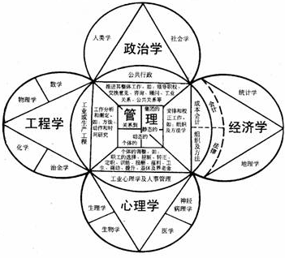

1 . 教学安排
2 . 概述
3 . 工业工程发展简史
4 . 工业工程的定义、目标和功能
5 . 工业工程学科的范畴与性质
6 . 工业工程的特点和意识
 工业工程的特点
工业工程的特点
工业工程的意识
7 . 思考与练习题
 返回课程学习首页
返回课程学习首页
工业工程的特点
综合分析工业工程的定义、内容(范畴)和目标，反映现代工业工程本质的基本特点，可概括出以下几个反映现代工业工程本质的基本特点。
(一)工业工程的核心是降低成本、提高质量和生产率
工业工程的目的是提高生产率、利润和效率。因此，可以说工业工程实质上是一门提高生产率的学问。提高生产率是工业工程的出发点和最终目标，是工业工程师的第一使命。
工业工程发展史告诉我们，它的产生就是为了减少浪费、降低成本、提高效率，由于只有为社会创造并提供了质量合格的产品和服务，才能得到有效的产出，否则不合格产品生产越多，浪费就越大，反而会降低生产率。所以，不仅要降低成本，还要保证质量，它们是提高生产率的前提和基础。
把降低成本、提高质量和生产率联系起来综合研究，追求生产系统的最佳整体效益，是反映工业工程实质的重要特点。
(二)工业工程是综合性的应用知识体系
工业工程的定义和内容已经清楚地表明，工业工程是一个包括多种学科知识和技术的庞大体系，其本质在于综合地运用这些知识和技术。关于工业工程综合性可以从图1-3所示的工业工程学图解来认识和理解。

图1-3 工业工程学图解
工业工程的综合性集中体现在技术和管理的结合上。通常，人们习惯于把技术称做硬件，把管理称作软件。由于两者的性质和功能不同，容易形成分离的局面，工业工程从提高生产率的目标出发，不仅要研究和发展硬件部分，即制造技术、工具和程序，而且要提高软件水平，即改善各种管理与控制，使人和其他要素(技术、机械、信息等)有机地协调，使硬件部分发挥出最佳效用。所以，简单地说，工业工程实际是把技术与管理有机地结合起来的学科。
(三)注重人的因素
生产系统的各组成要素之中，人是最活跃和不确定性最大的因素。工业工程为实现其目标，在进行系统设计、实施控制和改善的过程中，都必须充分考虑到人和其他要素之间的关系和相互作用，以人为中心来进行设计。从操作方式、工作站设计、岗位和职务设计直到整个系统的组织设计，工业工程都十分重视研究人的因素，包括人一机关系；环境对人的影响(生理和心理等方面)；人的工作主动性、积极性和创造性、激励方法等，寻求合理配置人和其他因素，建立适合人的生理和心理特点的机器和环境系统，使人能够发挥能动作用，达到在生产过程中提高效率，安全、健康、舒适地工作，并能最好地发挥各生产要素的作用。
(四)工业工程的重点是面向微观管理
为了达到减少浪费、降低成本的目的，工业工程重点面向微观管理，从工作研究、作业分析、动作和微动作分析到研究制定作业标准，确定劳动定额。从各种现场管理优化到各职能部门之间的协调和管理改善等都需要工业工程发挥作用。
(五)工业工程是系统优化技术
工业工程所强调的优化是系统整体的优化，不单是某个生产要素或某个局部对象的优化，最终追求的是系统整体效益最佳(少投入、多产出)。所以，工业工程从提高系统总生产率这一总目标出发，对各种生产资源和环节作具体的研究、统筹分析、合理的配置；对种种方案作定量化的分析比较，寻求最佳的设计和改善方案，这样才能充分发挥各要素和各子系统的功能，使之协调有效地运行。
系统的运行是一个动态过程，具有各种随机因素。社会的前进及市场竞争日趋激烈，对各种产品提出了越来越高的要求，需要进一步提高生产率；而科学技术的高度发展也为工业工程提供了更多的知识和方法，去实现这个目标。所以，生产系统的优化不是一次性的，工业工程追求的也不是一时的优化，而是经常地研究系统的优化，对系统进行革新、改造和提高，使之不断在新的条件下实现优化，永远获得更高的综合效益。